Fig 1: Ventana Lugar
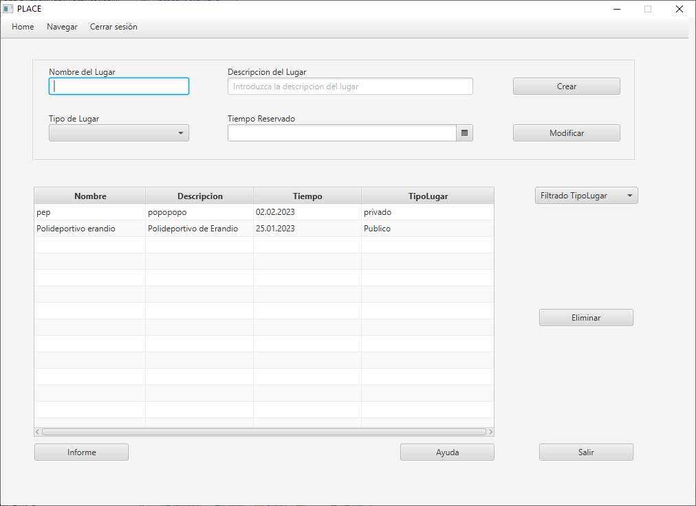Esto saldrá al abrir la ventana, una vez se ejecuta.
Fig 2: Creacion
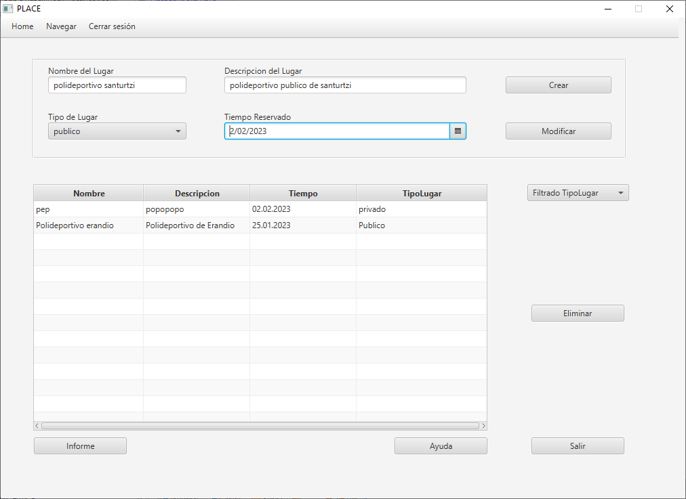Al rellenamos los 4 campos previamente vacios .
Fig 3: Creando un Lugar
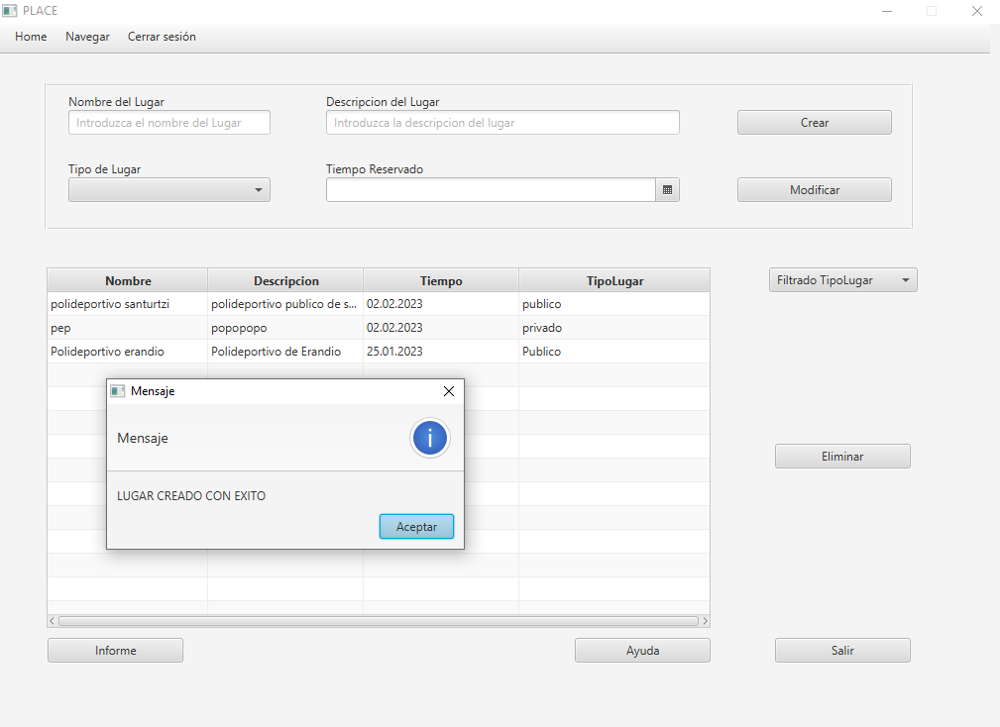y pulsar el boton de crear nos saldra el siguiente mensaje.
Fig 4: empezamos a modificar
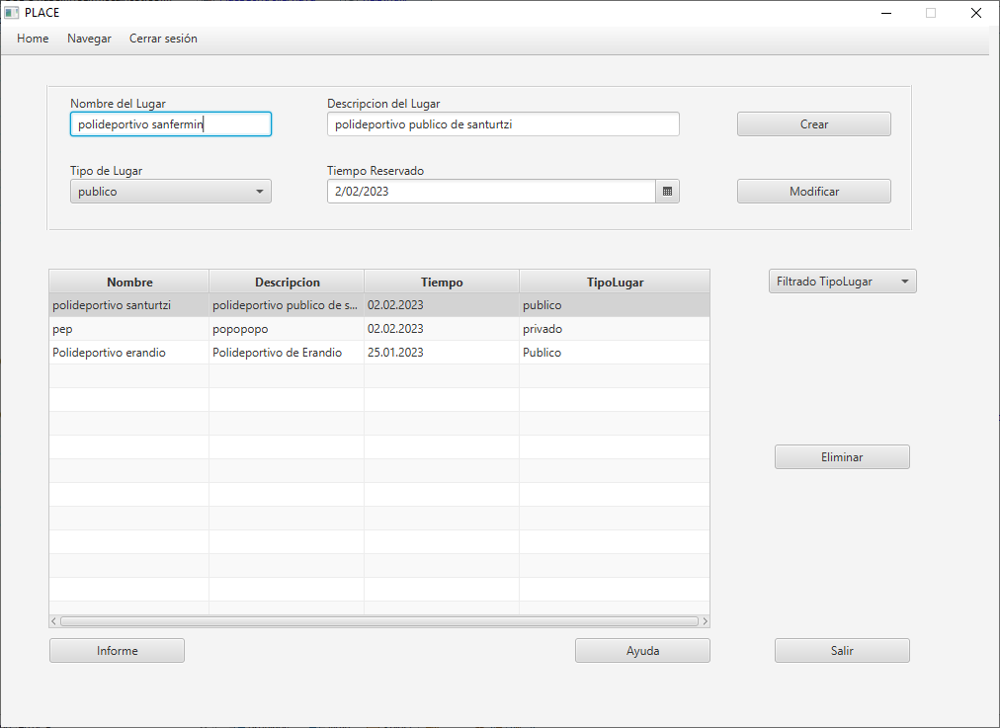Al escoger un elemento de la tabla los datos característicos de esta se marcarán en su campo correspondiente, permitiendo el borrado y la modificación de estos.
Fig 6.1: Confirmación de borrado
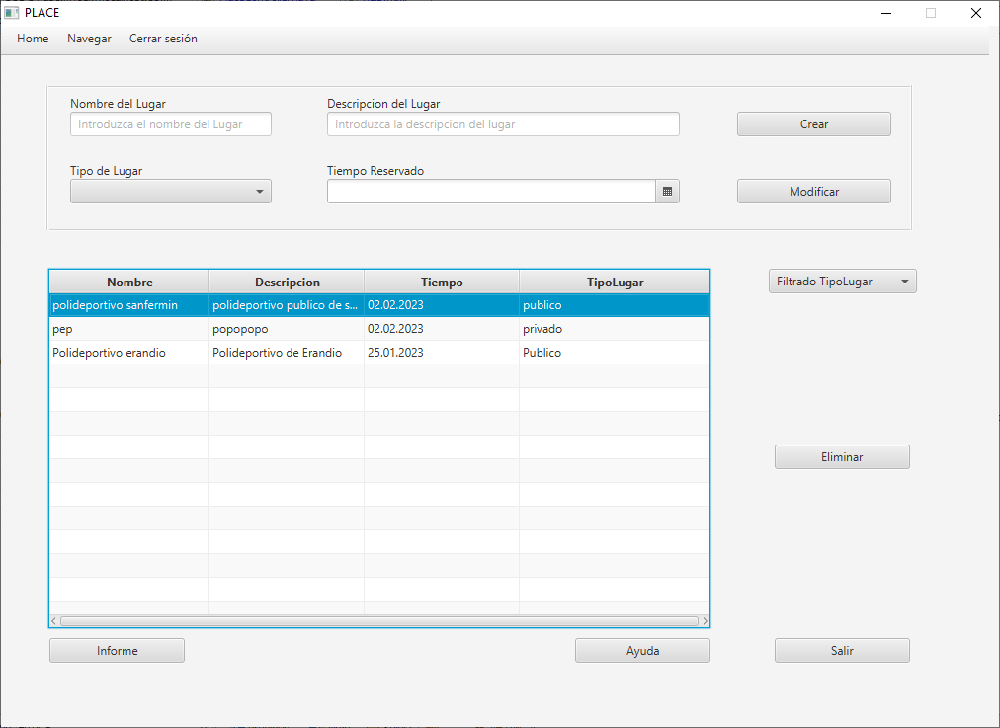Fig 6.2: Borrado
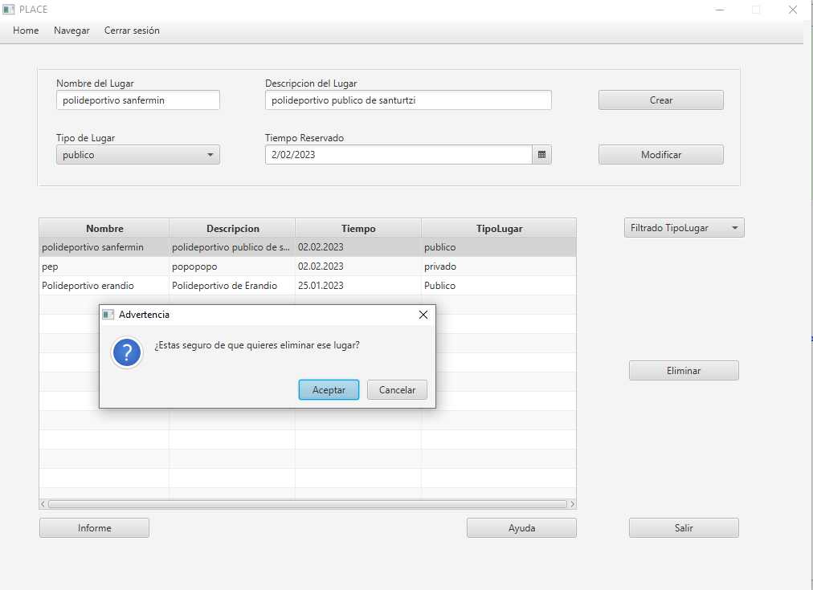Al pulsar borrado saldrá una ventana pidientote si en verdad quieres borrar el lugar selecionado o no, si pulsas sí comprobará los datos y en caso de ser incorrectos saldrá un error y podrás volver a intentarlo otra vez. Si los datos son correctos el mensaje se borrará como se muestra aquí:
Fig 8: Filtrados
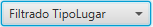Esta ventana tiene 2 posibles opciones de filtrado para tipo de lugar: privado y publico
Fig 9: Filtrado por privado
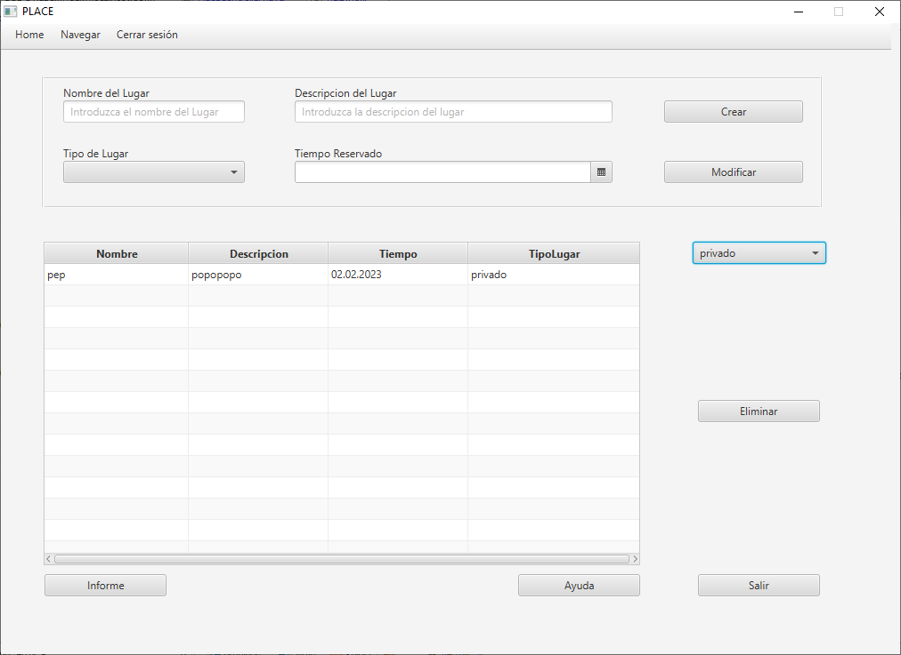Si buscamos uno de los valores por parametro de la tabla nos saldrá el lugar, si no sale nos devolverá la tabla vacia, indicando que no hay valores por parametro indicado. Para volver a ver todos los objetivos debemos de escoger la opción ninguna.
Fig 9: Filtrado por publico
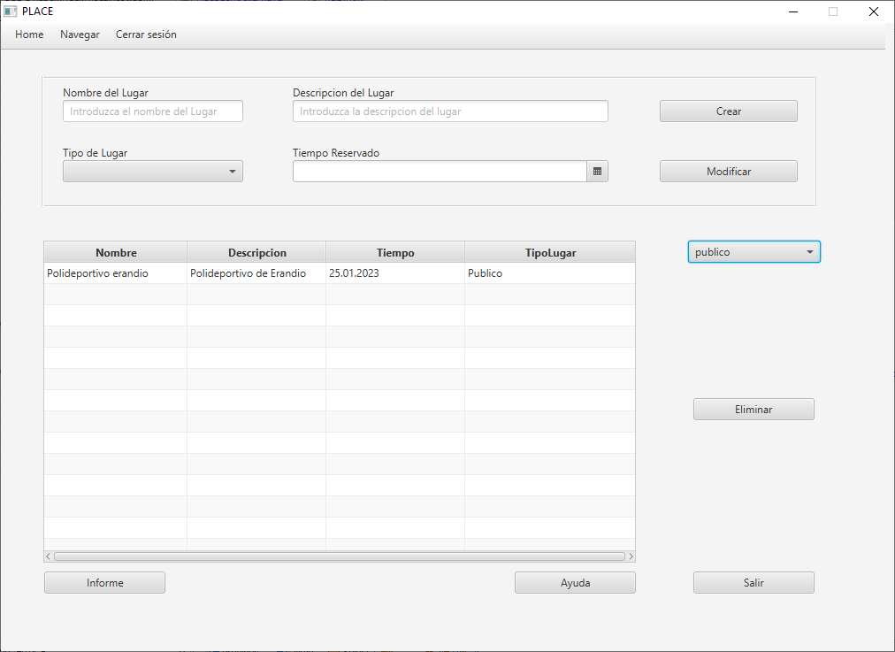Si buscamos uno de los valores por parametro de la tabla nos saldrá el lugar, si no sale nos devolverá la tabla vacia, indicando que no hay valores por parametro indicado. Para volver a ver todos los objetivos debemos de escoger la opción ninguna.
Fig 11: Informe
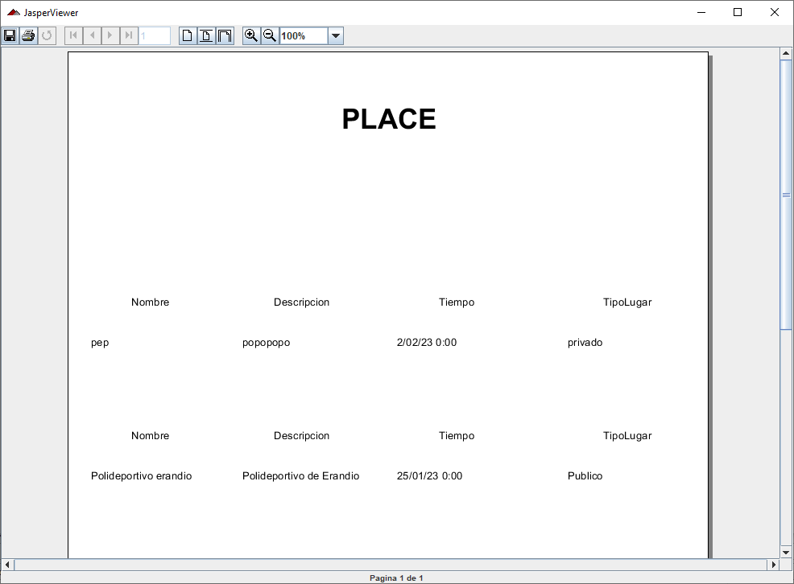Si pulsamos el botón de informe de la ventana de objetivo saldrá una ventana emergente con un informe de jasperreprots, mostrando la info de la tabla de lugares detalladamente, aqui puedes imprimirla etc...
Fig 11: Ayuda
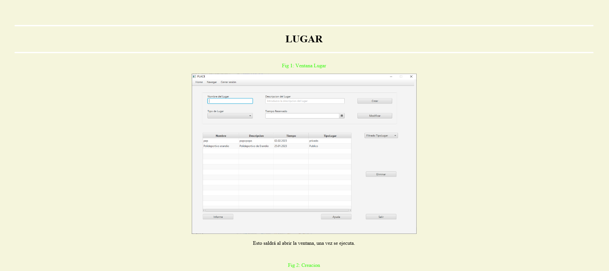Si pulsamos el botón de informe de la ventana de ayuda saldrá una ventana emergente con el documento en el que estamos ahora mismo que explica toda esta ventana
Fig 12: Navegación Menubar
Arriba a la izquierda tenemos un menubar para navegar entre distintas ventanas, con varias opciones: